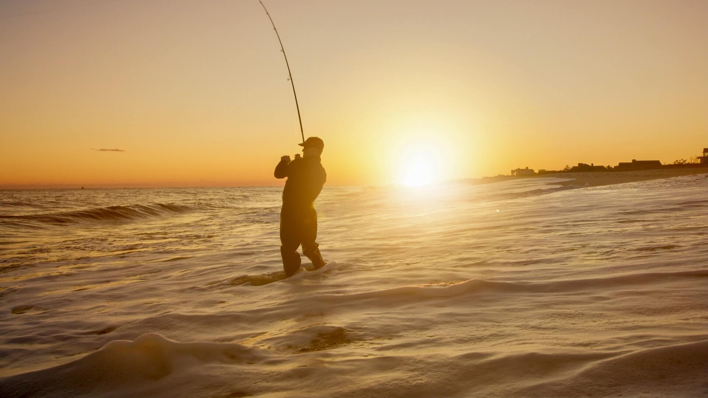
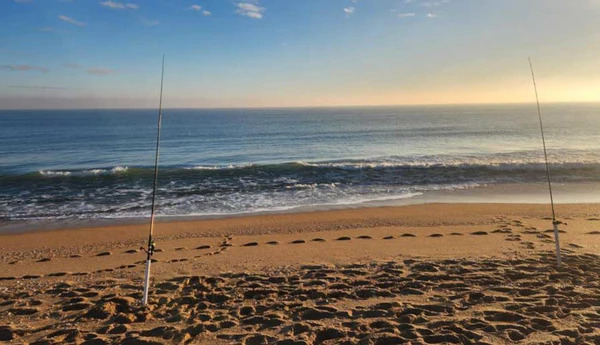

Welcome to Surfcasting Spain
Surfcasting is one of the most popular forms of fishing in Spain. It allows anglers to fish directly from beaches while targeting species such as sea bream, sea bass and mackerel.
This website introduces the best fishing spots, equipment, bait and techniques for successful beach fishing.
What You Will Find
Fishing Spots
Discover productive beaches and coastal areas.
Equipment
Learn about rods, reels, lines and tackle.
Bait
Compare the most effective natural baits.
Techniques
Improve casting distance and fish detection.
Featured Fishing Spot

Mediterranean Beaches
Long sandy beaches provide excellent conditions for surfcasting and are ideal for beginners and experienced anglers alike.